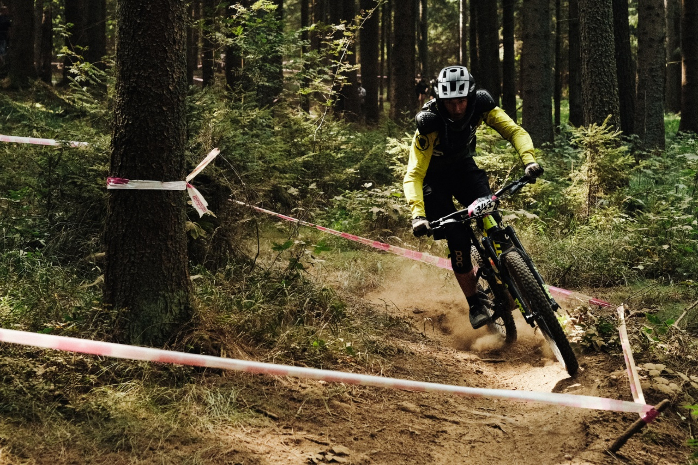
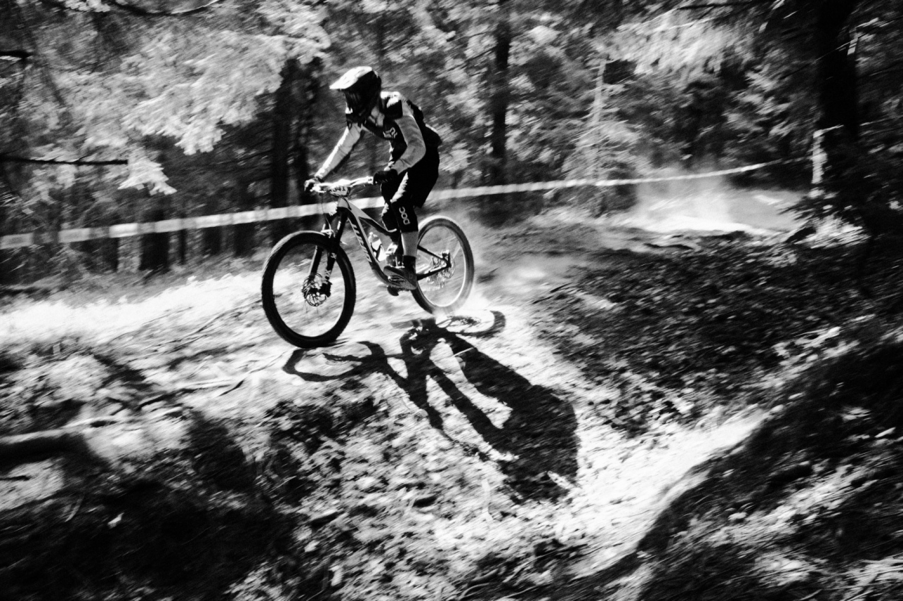
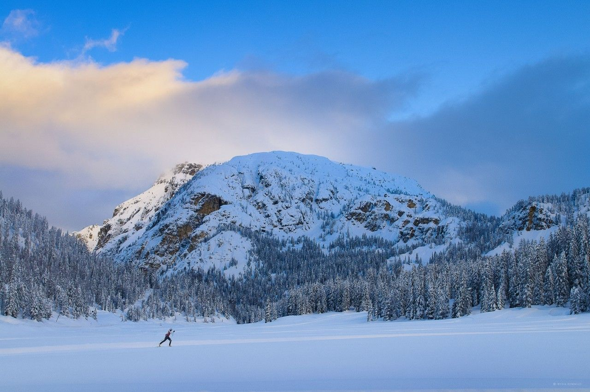
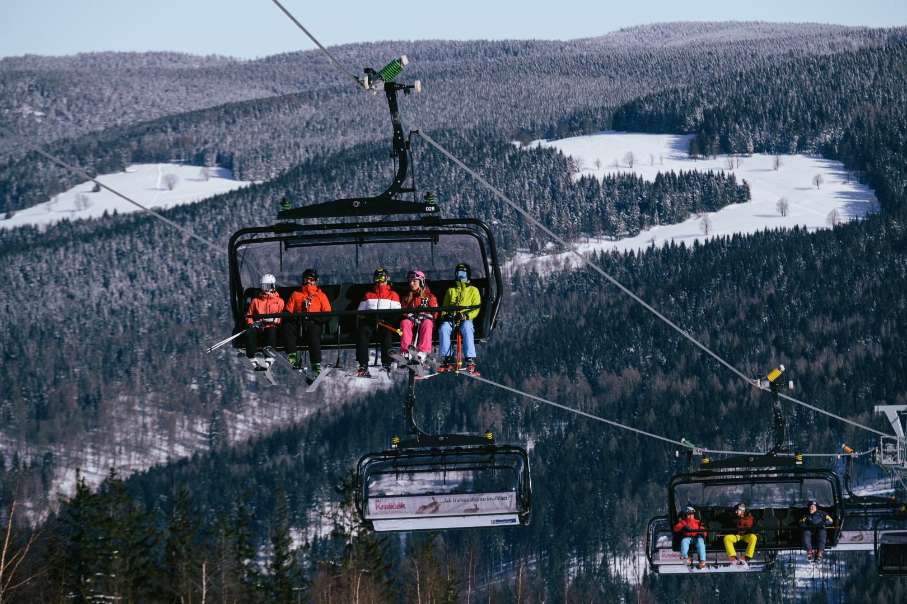

V roce 2023 jsem si koupil své první enduro kolo. Bylo to v létě a měl jsem ho jen na ježdění do lesa. Když přišla zima, dozvěděl jsem se o závodech, které se na těchto kolech jezdí. Mám pár kamarádů, kteří tato kola mají také, a tak jsme se rozhodli, že ty závody pojedeme spolu. Nakonec jsem s kamarády odjel tři závody a na nich jsem si užil spoustu zábavy. Bohužel minulý rok po létě jsem s kolem musel na nějaký čas přestat. Bylo to kvůli operaci zad. Každopádně, pokud to půjde, rád bych se k tomu někdy vrátil.
|  |  |
Na snowboardu jsem začal jezdit asi před pěti lety. Dříve jsem už lyžoval, takže to nebylo moje první setkání se sněhem. Ze začátku, kvůli dobrým podmínkám, jsem trénoval na dvoře. Díky tomu jsem už měl nějaké základy, když jsem poprvé vyrazil na svah. Za celou dobu, co jezdím, se mi nic vážného nestalo. Jen jednou, když jsem vystupoval, jsem spadl a natáhl si vaz. Jinak mám na snowboarding jen samé dobré vzpomínky. Kvůli operaci jsem musel na rok přestat, ale jakmile budu moct, hned se k tomu vrátím!
|  |  |